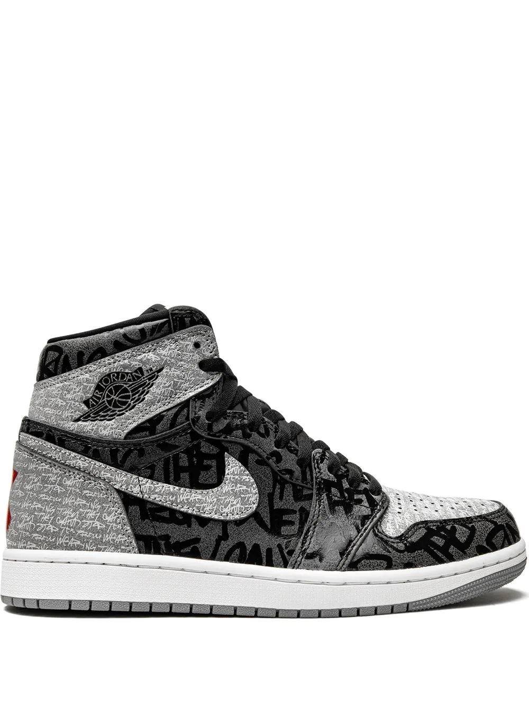

jordan 1 rebellionaire/h1>
historia de el par
La silueta de las Air Jordan 1 es una de las más
populares del mundo. En el momento de su lanzamiento
(1985), Nike y Michael Jordan se tuvieron que pelear
contra la NBA para defender el diseño. A medianos de
los 80 un diseño como aquel era una auténtica revolución.
La liga era muy clásica y AJ 1 cambiaba las reglas.
Air Jordan 1 retro High Rebellionaire es un homenaje
a la transgresión de aquella liga en la que Jordan puso
patas arriba la historia de la moda deportiva y las
sneakers en particular.
precio
9,500

procesos de compra
pago con tarjeta
pago con efectivo